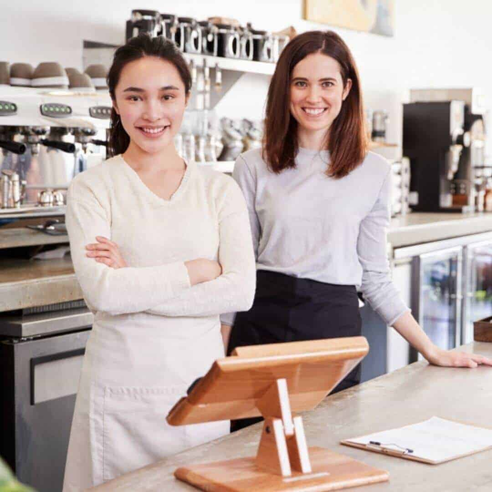

- Dirección: Av. Siempreviva 123 - Olivos - Buenos Aires
- Tel.: +54 111-222-444
- WhatsApp: +54 11 3322-1144
- E-Mail: viandasGaia@fakemail.com
- Días y horarios: L a V de 11 a 15 y de 19 a 23 hs
Todo empezó por...
También estuvimos en tu lugar: empezar a llevar una alimentación rica y sana y nunca tener tiempo para preparar las viandas, terminando siempre comiendo comida chatarra o poco saludable. El trabajo, los horarios, los niños, la casa... todo esto siempre son nuestras prioridades que nos impiden empezar a comer sano.
Nuestros inicios
Queriendo un cambio, empezamos a investigar en internet buscando combinar entre lo saludable y lo rico. Empezamos nuestro emprendimiento en una pequeña cocina desde casa y ofreciendo nuestros platos por las redes sociales.
Y aquí estamos!

Finalmente en 2016 decidimos que era el momento de ir más lejos! Mudamos nuestra cocina a nuestro local ubicado en la hermosa zona de Olivos en zona norte.
Desde entonces le llevamos las mejores viandas ricas y saludables a particulares y empresas, ayudándolos a salir del paso a la hora del almuerzo o la cena, o planificando el menú según el gusto y las necesidades de cada uno!